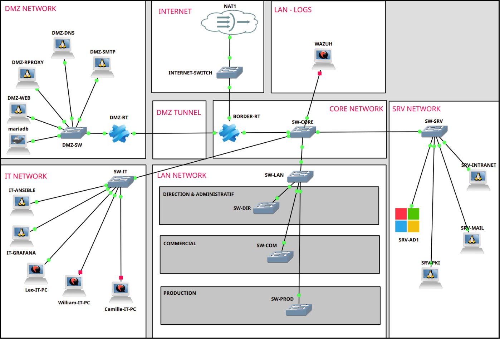

Bachelor Développeur Solutions Numériques Sécurisées
Une année pour associer développement applicatif et sécurité dès la conception, avec un projet mené en équipe selon la méthode SCRUM.
Projet : ITWay
Contexte
En équipe de trois, conduite en SCRUM : bâtir l'infrastructure complète de l'entreprise fictive ITWay, avec des services dockerisés, une maquette réseau sous GNS3 et un déploiement automatisé avec Ansible.
Mon rôle
- Messagerie : Postfix, Dovecot et MariaDB, webmail Roundcube, boîtes gérées avec PostfixAdmin, relais en DMZ et TLS
- Authentification : connexion à la messagerie avec les identifiants Windows, via LDAP sur l'Active Directory
- Active Directory : OU et groupes créés par scripts PowerShell, profils itinérants, GPO de sécurité, RDP et audit, partages réseau
- Pare-feu Stormshield : mise en service, VLANs et DHCP, routage
Difficultés résolues
J'ai tenu un journal des incidents (symptôme, cause, correctif) : droits sur les certificats, flux bloqués entre la DMZ et le LAN, Postfix qui refusait de démarrer à cause d'un bloc submission placé dans le mauvais fichier, envois impossibles depuis Roundcube…
DockerPostfixDovecotRoundcubeLDAPActive DirectoryPowerShellStormshieldGNS3AnsibleSCRUM

Le dossier technique complet est disponible sur demande : contactez-moi.
Compétences mobilisées
DockerAnsibleStormshieldPostfix/DovecotActive DirectoryGNS3Git/GitHubSCRUM
← Retour au parcours